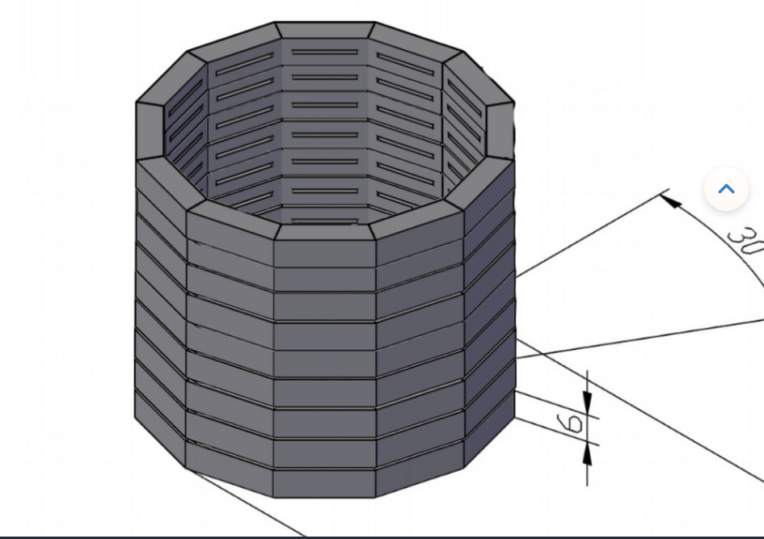
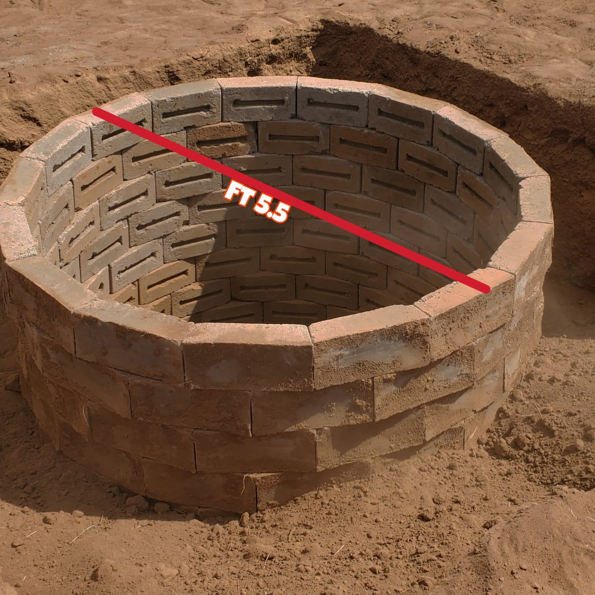
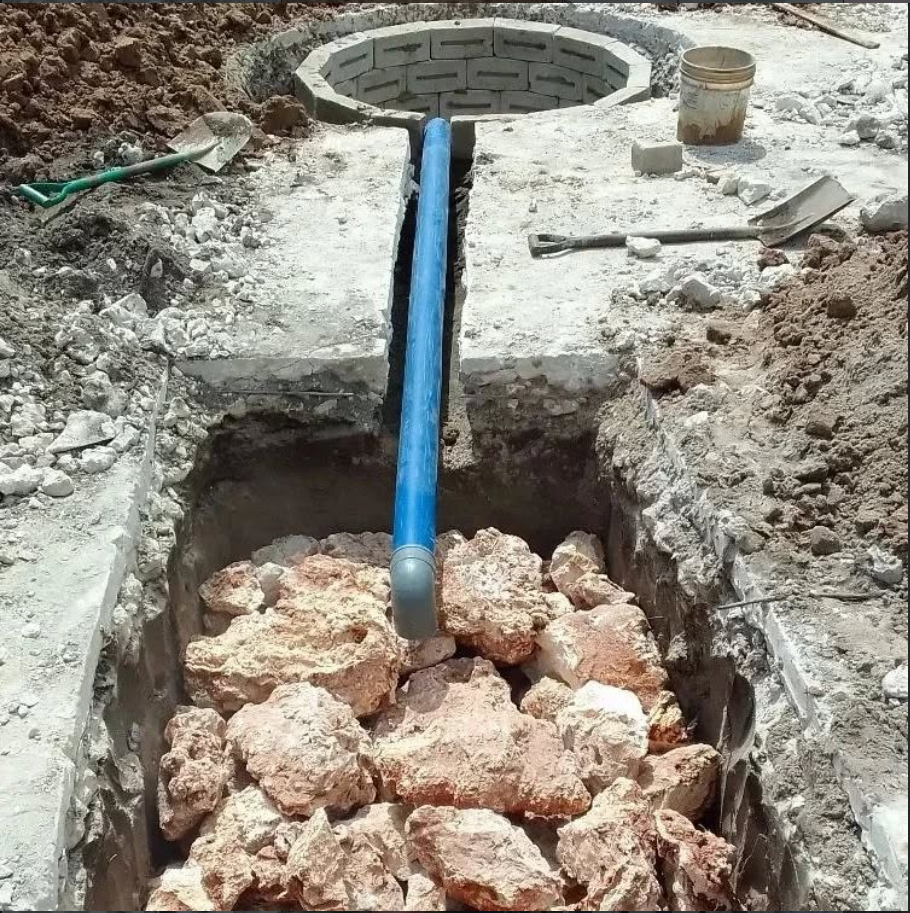
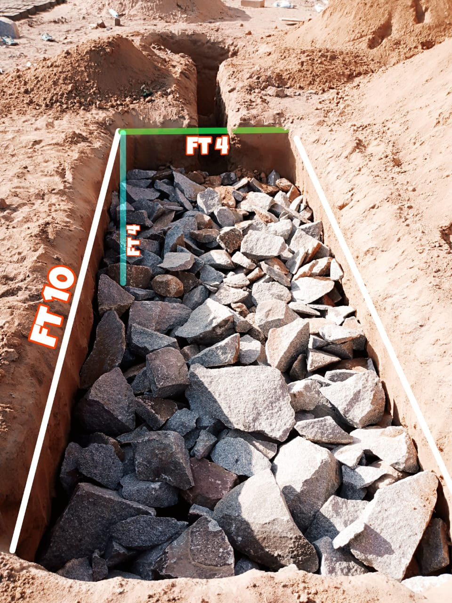
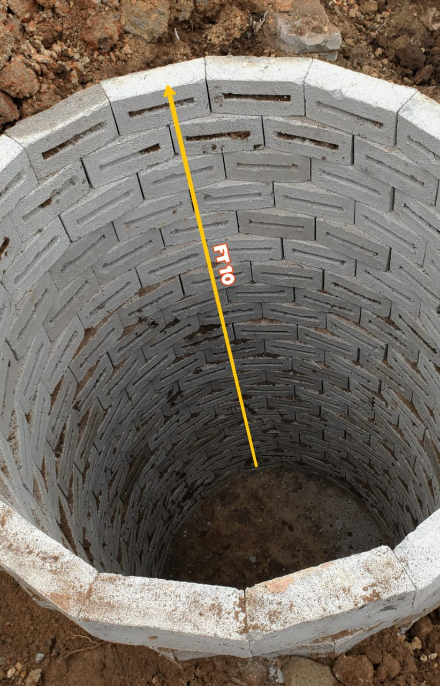

Tunatoa huduma bora na za kisasa kwa ajili ya maendeleo yako. Jiunge nasi leo kupata matokeo bora zaidi katika ujenzi wa mashimo ya vyoo vya kisasa visivyojaa kwa haraka.
Anza SasaDodoma latrine builders(shimoze) ni wataalamu wa ujenzi iliyojitolea kutoa miradi ya ubora na huduma bora. Tukiwa tumejidhatiti katika tasnia, timu yetu ya wataalamu wanaojitolea wanajikita na ujenzi wa mashimo ya vyoo kwa miradi ya makazi na biashara
Tunaelewa umuhimu wa kubadilisha ndoto zako kuwa ukweli. Lengo letu ni kuzidi matarajio yako kwa kutoa suluhisho za ubunifu, umakini kwa undani, na kukamilisha miradi kwa wakati. Ikiwa unahitaji shimo litakalo okoa Gharama zisizotarajiwa, tunayo ujuzi na rasilimali za kuleta wazo lako kuwa hai.
Hutumia mfumo wa tofali maalumu zenye muundo wa mshazari / sambamba tenge (trapezium) kwa lengo la kuwezesha kukaa katika duara na kukaza bila ya hata kutumia cement, hivyo basi hujishikiza kwa uimara kabisa. Lengo ni kwamba, pale maji taka yatakapo ingia yaweze kunyonywa na ardhi kwa sababu baina ya tofali moja na lingine hakuna kizuizi chochote na pia chini hakuna zege lililotangulia ivo kutokana na asili ya ardhi hua inafyonza maji basi maji yataweza kutoweka.


Kinachofanya shimo la choo kujaa mara nyingi hua ni maji taka na wala sio kinyesi. Na mfumo tayari umeundwa kuyadhibiti hayo maji taka, basi kinyesi baada ya muda kadhaa kitakuwa tope la uji uji kutokana na joto la ardhi ndani ya shimo pamoja na shughuli za bakteria na mara pale maji taka yatakapoingia na kuchanganyikana na tope basi hufanyika ujiuji mwepesi na wenyewe kupotea kwa kufyonzwa na ardhi. Basi mfumo unakuwa endelevu miaka na miaka kufanya shimo likae muda mrefu bila kujaa.
Hutumia mfumo wa tofali maalumu zenye muundo wa mshazari / sambamba tenge (trapezium) kwa lengo la kuwezesha kukaa katika duara na kukaza bila ya hata kutumia cement, hivyo basi hujishikiza kwa uimara kabisa. Lengo ni kwamba, pale maji taka yatakapo ingia yaweze kunyonywa na ardhi kwa sababu baina ya tofali moja na lingine hakuna kizuizi chochote na pia chini hakuna zege lililotangulia ivo kutokana na asili ya ardhi hua inafyonza maji basi maji yataweza kutoweka.


Kinachofanya shimo la choo kujaa mara nyingi hua ni maji taka na wala sio kinyesi. Na mfumo tayari umeundwa kuyadhibiti hayo maji taka, basi kinyesi baada ya muda kadhaa kitakuwa tope la uji uji kutokana na joto la ardhi ndani ya shimo pamoja na shughuli za bakteria na mara pale maji taka yatakapoingia na kuchanganyikana na tope basi hufanyika ujiuji mwepesi na wenyewe kupotea kwa kufyonzwa na ardhi. Basi mfumo unakuwa endelevu miaka na miaka kufanya shimo likae muda mrefu bila kujaa.
Mfumo huu huchukua eneo dogo kabisa la kiwanja chako.
Hautonyonya maji taka mara kwa mara
Ukilinganisha na mfumo wa zamani, mfumo huu unagharimu kwa bei ndogo tu.
Kwa siku nne/ tano ujenzi utakuwa umeshakamilika na tayari kwa matumizi.
Shimo ni imara hata kwa shughuli za parking, ama unaweza kuweka usawa wa ardhi na ukaweka pave au ukataka shimo litoke juu na kufanya kama kibalaza.
Kumbuka kwa gharama husika kila kitu kitakuwa juu yetu yaani material pamoja na ufundi. Na malipo ni baada ya kazi kuisha
SHIMO MOJA
MASHIMO MAWILI
SHIMO MOJA

Tazama miradi yetu ya hivi karibuni moja kwa moja kutoka Instagram
Habari! Mimi ni AI wa Domlatrine. Naweza kukusaidia nini kuhusu ujenzi wa mashimo ya kisasa?